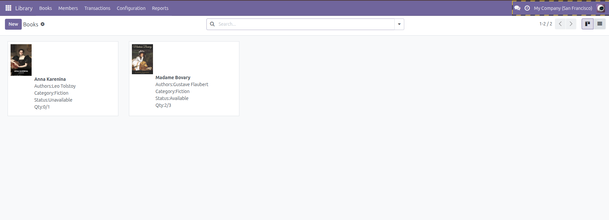
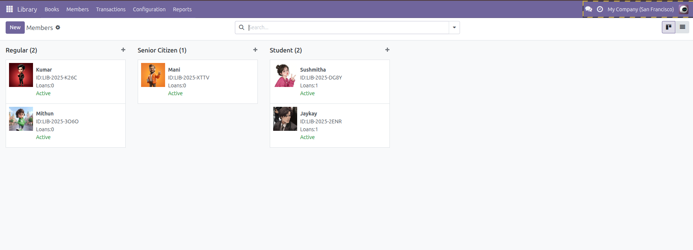

Figure 3: Transaction View
Figure 3: Transaction View
The Library Management module for Odoo allows you to efficiently manage books, members, and borrowing transactions within a library environment. This module is ideal for educational institutions, public libraries, or any organization managing a physical book collection.
 Figure 1: Book List View
 Figure 2: Member View
Figure 3: Transaction View
addons folder
📧 alantechnologies2022@gmail.com
📞 +91 96299 98555
Disclaimer:
This module is currently under development and may contain bugs. Please use it with caution.
By using this module, you agree that the developer is not responsible for any damage caused by the usage of this module.